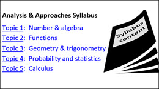

IB Docs (2) Team
IB Docs (2) Team

Syllabus content (SN)
Analysis & Approaches syllabus content (student notes)

click on topic to skip down to that section of the syllabusTopic 3: Geometry and trigonometry
Topic 4: Probability and statistics
■ Topic 1: Number and algebra
1. SL core
SL 1.1* Operations with numbers in the form \(a \times {10^k}\) where \(1 \le a < 10\) and k is an integer.
SL 1.2* Arithmetic sequences and series; use of the formulae for the nth term and the sum of the first n terms of the sequence; use of sigma notation for sums of arithmetic sequences; applications (e.g. simple interest); interpretation and prediction where a model is not perfectly arithmetic in real life.
SL 1.3* Geometric sequences and series; use of the formulae for the nth term and the sum of the first n terms of the sequence; use of sigma notation for the sums of geometric sequences; applications such as spread of disease, salary increase and decrease, population growth.
SL 1.4* Financial applications of geo. sequences and series including compound interest, annual depreciation.
SL 1.5* Laws of exponents with integer exponents; introduction to logarithms with base 10 and e; numerical evaluation of logarithms using technology.
1. SL Analysis
SL 1.6 Simple deductive proof, numerical and algebraic; how to lay out a left-hand side to right-hand side proof; the symbols and notation for equality and identity.
SL 1.7 Laws of exponents with rational exponents; laws of logarithms; change of base of a logarithm; solving exponential equations, including using logarithms.
SL 1.8 Sum of infinite convergent geometric sequences.
SL 1.9 The binomial theorem; binomial expansions; use of Pascal’s triangle and \({}_n{C_r}\) (compute using both the formula and technology).
1. HL Analysis
AHL 1.10 Counting principles, including permutations and combinations; extension of the binomial theorem to fractional and negative indices.
AHL 1.11 Partial fractions; maximum of two distinct linear terms in the denominator, with degree of numerator less than the degree of the denominator.
AHL 1.12 Complex numbers; Cartesian form \(z = a + b{\textrm{i}}\) ; the terms real part, imaginary part, conjugate, modulus and argument; the complex plane.
AHL 1.13 Modulus–argument (polar) form \(z = r\left( {\cos \theta + {\textrm{i}}\sin \theta } \right)\) ; Euler form \(z = r{e^{{\textrm{i}}\theta }}\) ; sums, products and quotients in Cartesian, polar or Euler forms and their geometric interpretation.
AHL 1.14 Complex conjugate roots of quadratic and polynomial equations with real coefficients; De Moivre’s theorem and its extension to rational exponents; powers and roots of complex numbers.
AHL 1.15 Proof by mathematical induction; proof by contradiction; use of a counterexample to show that a statement is not always true.
AHL 1.16 Solutions of systems of linear equations (a maximum of three equations in three unknowns), including cases where there is a unique solution, an infinite number of solutions or no solution.
■ Topic 2: Functions
2. SL core
SL 2.1* Different forms of the equation of a straight line; gradient; intercepts; parallel & perpendicular lines.
SL 2.2* Concept of a function, domain, range & graph; function notation; concept of a function as a math model; concept of inverse function; inverse function as a reflection in the line \(y = x\); the notation \({f^{ - 1}}\left( x \right)\)
SL 2.3* Graph of a function; creating a sketch from info given or a context, including transferring a graph from screen to paper; using technology to graph functions including their sums and differences.
SL 2.4* Determine key features of graphs; finding point of intersection of two curves or lines using technology.
2. SL Analysis
SL 2.5 Composite functions; identity function; finding the inverse function \({f^{ - 1}}\left( x \right)\)
SL 2.6 Quadratic functions: graphs, y-intercept; axis of symmetry; factored form \(f\left( x \right) = a\left( {x - p} \right)\left( {x - q} \right)\); x-intercepts; the form \(f\left( x \right) = a{\left( {x - h} \right)^2} + k\) with vertex \(\left( {h,k} \right)\)
SL 2.7 Solving quadratic equations and inequalities; using factorization, completing the square (vertex form); quadratic formula; discriminant and nature of roots: 2 distinct real roots, 2 equal real roots, no real roots.
SL 2.8 The reciprocal function 1/x: its graph and self-inverse nature; rational functions of the form \(\frac{{{\textrm{linear}}}}{{{\textrm{linear}}}}\) and their graphs; equations of vertical and horizontal asymptotes.
SL 2.9 Exponential functions and their graphs; logarithmic functions and their graphs.
SL 2.10 Solving equations, both graphically and analytically; use of technology to solve a variety of equations, including those where there is no appropriate analytic approach; applications of graphing skills and solving equations that relate to real-life situations.
SL 2.11 Transformations of graphs; translations, reflections (in both axes), vertical stretches, horizontal stretches, composite transformations.
2. HL Analysis
AHL 2.12 Polynomial functions, their graphs and equations; zeros, roots and factors; the factor and remainder theorems; sum and product of the roots of polynomial equations.
AHL 2.13 Rational functions of the forms \(\frac{{{\textrm{linear}}}}{{{\textrm{quadratic}}}}\) and \(\frac{{{\textrm{quadratic}}}}{{{\textrm{linear}}}}\); horizontal, vertical & oblique asymptotes.
AHL 2.14 Odd & even functions; finding inverse function, including domain restriction; self-inverse functions.
AHL 2.15 Solutions of inequalities, both graphically and analytically.
AHL 2.16 Graphs of the functions \(y = \left| {f\left( x \right)} \right|\) , \(y = f\left( {\left| x \right|} \right)\), \(y = \frac{1}{{f\left( x \right)}}\), \(y = f\left( {ax + b} \right)\), \(y = {\left[ {f\left( x \right)} \right]^2}\); solution of modulus equations and inequalities.
■ Topic 3: Geometry and trigonometry
3. SL core
SL 3.1* The distance between two points in three-dimensional space, and their midpoint; volume and surface area of three-dimensional solids including right-pyramid, right cone, sphere, hemisphere and combinations of these solids; the size of an angle between two intersecting lines or between a line and a plane.
SL 3.2* Use of sine, cosine and tangent ratios to find the sides and angles of right-angled triangles; the sine rule (not including ambiguous case); the cosine rule; area of a triangle as \({\textstyle{1 \over 2}}ab\sin C\)
SL 3.3* Applications of right and non-right angled trigonometry, Pythagoras’ theorem (contexts may include use of bearings); angles of elevation & depression; construction of labelled diagrams from written statements.
3. SL Analysis
SL 3.4 The circle: radian measure of angles; length of an arc; area of a sector.
SL 3.5 Definition of sinx and cosx in terms of the unit circle; definition of tanx as sinx /cosx; exact values of trigonometric ratios of \(0,{\textstyle{{\textrm{\pi }} \over 6}},{\textstyle{{\textrm{\pi }} \over 4}},{\textstyle{{\textrm{\pi }} \over 3}},{\textstyle{{\textrm{\pi }} \over 2}}\) and their multiples; extension of the sine rule to the ambiguous case.
SL 3.6 The Pythagorean identity \({\cos ^2}\theta + {\sin ^2}\theta = 1\); double angle identities for sine and cosine; the relationship between trigonometric ratios.
SL 3.7 The circular functions sinx, cosx, and tanx; amplitude, their periodic nature, and their graphs; composite functions of the form \(f\left( x \right) = a\sin \left( {b\left( {x + c} \right)} \right) + d\); transformations; real-life contexts.
SL 3.8 Solving trigonometric equations in a finite interval, both graphically and analytically; equations leading to quadratic equations in sinx, cosx, or tanx.
3. HL Analysis
AHL 3.9 Definition of the reciprocal trigonometrical ratios; Pythagorean identities; the inverse trig functions; their domains and ranges; their graphs.
AHL 3.10 Compound angle identities; double angle identity for tanx.
AHL 3.11 Relationships between trigonometric functions and the symmetry properties of their graphs.
AHL 3.12 Concept of a vector; position vectors; displacement vectors; representation of vectors using directed line segments; base vectors i, j, k; components of a vector; algebraic and geometric approaches to following: sum and difference of two vectors, zero vector, multiplication by a scalar, parallel vectors, magnitude of a vector, unit vectors, position vectors, displacement vector; proofs of geometrical properties using vectors.
AHL 3.13 The definition of the scalar product of two vectors; applications of the properties of the scalar product; the angle between two vectors; perpendicular vectors; parallel vectors.
AHL 3.14 Vector equation of a line in two and three dimensions; parametric form; Cartesian form; the angle between two lines; simple applications to kinematics.
AHL 3.15 Coincident, parallel, intersecting and skew lines, distinguishing between these cases; points of intersection.
AHL 3.16 The definition of the vector product of two vectors; properties of the vector product; geometric interpretations.
AHL 3.17 Vector equations of a plane: \(r = a + \lambda b + \mu c\) and \(r \cdot n = a \cdot n\). Cartesian equation of a plane.
AHL 3.18 Intersections of: a line and a plane, 2 planes, 3 planes; angle between: a line and a plane, 2 planes.
■ Topic 4: Probability and statistics
4. SL core
SL 4.1* Concepts of population, sample, random sample, discrete and continuous data; reliability of data sources and bias in sampling; interpretation of outliers; sampling techniques: simple random, convenience, systematic, quota and stratified methods.
SL 4.2* Presentation of data (discrete and continuous); frequency histograms with equal class intervals; cumulative frequency; cumulative frequency graphs; use to find median, quartiles, percentiles, range and interquartile range (IQR); production and understanding of box and whisker diagrams; use of box and whisker diagrams to compare two distributions, using symmetry, median, interquartile range or range; determining whether data may be normally distributed by consideration of the symmetry of the box and whiskers.
SL 4.3* Measures of central tendency (mean, median and mode); estimation of mean from grouped data; modal class; measures of dispersion (interquartile range, standard deviation and variance); effect of constant changes on the original data; quartiles of discrete data.
SL 4.4* Linear correlation of bivariate data; Pearson’s product-moment correlation coefficient, r ; scatter diagrams; lines of best fit, by eye, passing through the mean point; equation of the regression line of y on x; use of the equation of the regression line for prediction purposes; interpret the meaning of the parameters, a and b, in a linear regression.
SL 4.5* Concepts of trial, outcome, equally likely outcomes, relative frequency, sample space (U ) and event; the probability of an event A; the complementary events; expected number of occurrences.
SL 4.6* Use of Venn diagrams, tree diagrams, sample space diagrams and tables of outcomes to calculate probabilities; combined events; mutually exclusive events; conditional probability; independent events.
SL 4.7* Concept of discrete random variables and their probability distributions; expected value (mean), E(X) for discrete data; applications.
SL 4.8* Binomial distribution; situations where the binomial distribution is an appropriate model; mean and variance of the binomial distribution.
SL 4.9* The normal distribution and curve; properties of normal distribution; diagrammatic representation; normal probability calculations; inverse normal calculations (no use of standardized normal variable z).
4. SL Analysis
SL 4.10 Equation of the regression line of x on y; use of equation for prediction purposes (aware of reliability)
SL 4.11 Formal definition and use of the formulae: for conditional probabilities, and for independent events; testing for independence.
SL 4.12 Standardization of normal variables (z-values); inverse normal calculations where mean and standard deviation are unknown.
4. HL Analysis
AHL 4.13 Use of Bayes’ theorem for a maximum of three events.
AHL 4.14 Variance of a discrete random variable; continuous random variables and their probability density functions. including piecewise functions; mode and median of continuous random variables; mean, variance and standard deviation of discrete and continuous random variables; the effect of linear transformations.
■ Topic 5: Calculus
5. SL core
SL 5.1* Introduction to concept of a limit; derivative interpreted as gradient function and as rate of change.
SL 5.2* Increasing and decreasing functions: graphical interpretation of \(f'\left( x \right) > 0\), \(f'\left( x \right) = 0\), \(f'\left( x \right) < 0\)
SL 5.3* Power rule for differentiation; derivative of functions of the form \(f\left( x \right) = a{x^n} + b{x^{n - 1}} + \cdots \)
SL 5.4* Tangents and normals at a given point, and their equations.
SL 5.5* Introduction to integration as anti-differentiation; definite integrals using technology; areas between a curve and the x-axis; anti-differentiation with a boundary condition to determine the constant term.
5. SL Analysis
SL 5.6 Derivative of \({x^n}\left( {n \in \mathbb{Q}} \right),\;\sin x,\;\cos x,\;{e^x}\) and \(\ln x\); differentiation of a sum and a multiple of these functions; the chain rule for composite functions; the product and quotient rules.
SL 5.7 The second derivative; graphical behaviour of functions, including the relationship between the graphs of a function, its 1st derivative and its 2nd derivative.
SL 5.8 Local maximum and minimum points; testing for maximum and minimum; optimization; points of inflexion with zero and non-zero gradients.
SL 5.9 Kinematic problems involving displacement, velocity, acceleration and total distance travelled.
SL 5.10 Indefinite integral of \({x^n}\left( {n \in \mathbb{Q}} \right),\;\sin x,\;\cos x,\;\frac{1}{x}\) and \({e^x}\); composites of any of these with the linear function \(ax + b\); integration by inspection (reverse chain rule) or by substitution for expressions of the form \(\int {k\,g'\left( x \right)} \,f\left( {g\left( x \right)} \right)dx\)
SL 5.11 Definite integrals, including analytical approach; areas of a region enclosed by a curve and the -axis, where the curve can be positive or negative, without the use of technology; areas between curves.
5. HL Analysis
AHL 5.12 Informal understanding of continuity and differentiability of a function at a point; understanding of limits (convergence and divergence); definition of derivative from first principles; higher derivatives.
AHL 5.13 The evaluation of limits of the form and using l’Hôpital’s rule; repeated use of l’Hôpital’s rule.
AHL 5.14 Implicit differentiation; related rates of change; optimisation problems.
AHL 5.15 Derivatives of all six trig functions and their inverses; indefinite integrals of the derivatives of any of these functions; composites of any of these with a linear function; use partial fractions to rearrange integrand
AHL 5.16 Integration by substitution; integration by parts; repeated integration by parts.
AHL 5.17 Area of the region enclosed by a curve and the y-axis in a given interval; volumes of revolution about the x -axis or y -axis.
AHL 5.18 First order differential equations; numerical solution of using Euler’s method; by separation of variables; homogeneous differential equations; solutions using the integrating factor method.
AHL 5.19 Maclaurin series; use of simple substitution, products, integration and differentiation to obtain other series; Maclaurin series developed from differential equations.
 Twitter
Twitter
 Facebook
Facebook
 LinkedIn
LinkedIn